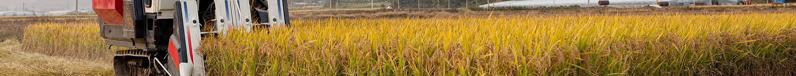
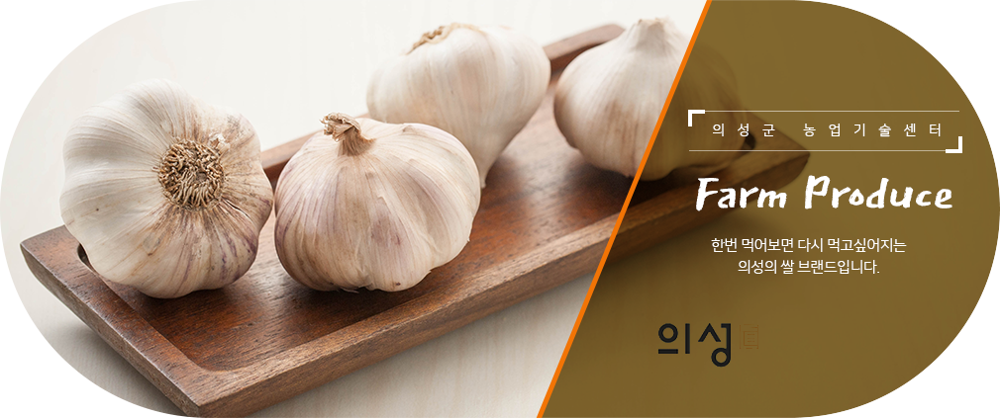

책으로 소통하는 행복한 도서관 의성군립도서관 Uiseong County Library
센터소개

마늘

전국 최고의 자랑 의성 토종 마늘
의성마늘은 조상대대로 재배되어 온 토종마늘로 주아재배를 하여 즙액이 많고, 독특한 향기와 매운맛이 감돌아 저장성이 강하여 전국 농산물 시장에서 가장 인기가 높으며, 한지형 마늘로는 전국 1위의 생산량을 자랑하고 있습니다.
의성마늘 재배현황
기준년도 : 2015년도
| 재배면적 | 1,399ha |
|---|---|
| 농가구 | 2,913호 |
| 생산량 | 14,300톤 |
| 소득 | 785억원 |
의성마늘 지도 방향
- 마늘주아이용 우량종구 자가생산
- 건조 방법 개선으로 상품성 향상
- 마늘 가공품 개발 → 부가가치 향상
이것이 진짜 의성마늘 이다!
-
의성마늘쫑대를 중심으로 마늘쪽의 끝이 밀착, 제비꼬리모양
-
남도마늘쫑대와 마늘쪽사이의 공간이 벌어지고 쪽모양이 둥글다
-
대서마늘쫑대와 마늘쪽사이의 공간이 매우 크며 쪽수가 많다